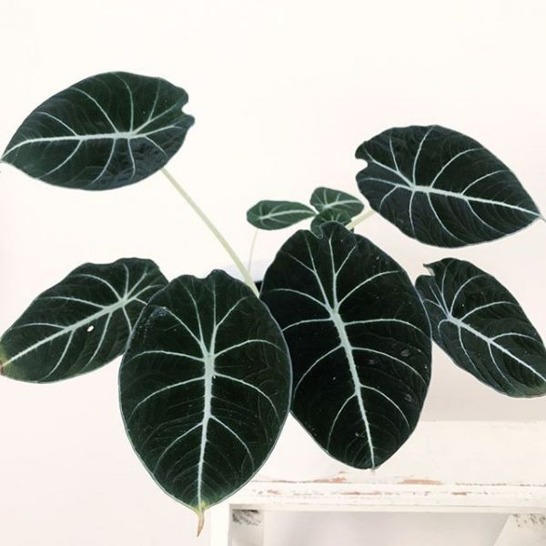

Impressive, Alocasia 'Portora' (Elephant Ear) is a tender perennial boasting Upright Elephant Ear, Alocasia portidora, Alocasia portadora
almost black leaves and contrasting, silver veins. The leaves of Alocasia Reginula look velvet-like but are a little rough to touch. This Alocasia grows only up to 30-40cm tall.